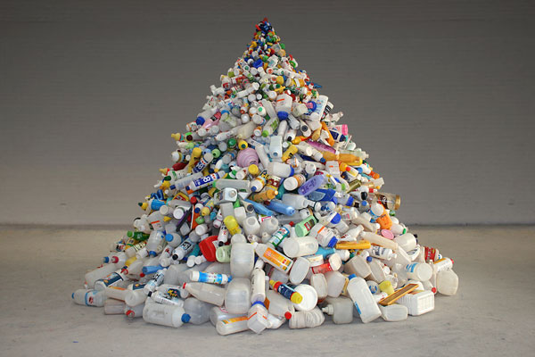
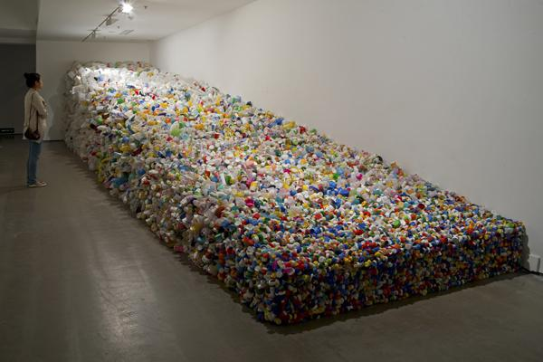
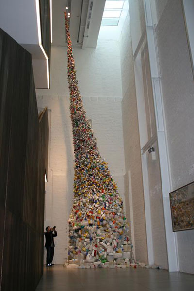
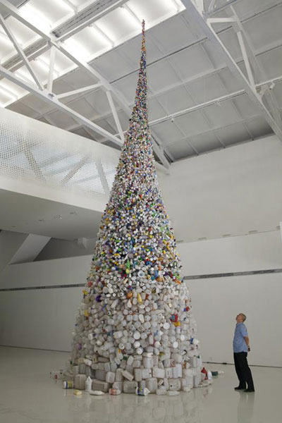

Self-Statement

Rest in Peace
2010
Plastic, steel
Diameter 250, height 210cm
Installed inside the artist studio
------------------------------------------------------------------------------------------------------------------
----------------------------------------------

Absolute Order
2010
Plastic, steel
1200x200x250 to 60cm
Installed inside Today Art Museum, Beijing
------------------------------------------------------------------------------------------------------------------
----------------------------------------------


Thrown To the Wind
2010
Plastic, steel
Diameter 400, height1150cm
Installed inside the White Rabbit Gallery, Sydney
------------------------------------------------------------------------------------------------------------------
----------------------------------------------
Artist statement:
After the work Thrown to the Wind was displayed at the White Rabbit Gallery in Sydney (please see the image above), almost all the comments on interviews and critical articles are related mainly to its implication in environment protection and ecology. Due to such a larger scale of population in mainland China, if every Chinese intended to adopt the American way of living, it might be a disaster in ecology. An example will be the wasted plastic bottles thrown away by us on a daily basis. Although I have used the wasted plastic bottles available everywhere in mainland China as the media for my work Thrown to the Wind, its implication is not solely meant to be environment protection. If to see the three pieces of my work created in the year of 2010, my interest in creating those work could be seen as of the relationship between media and environment, an exploration for a media best expressing my feeling today.
Today we live in a time so titled "After the end of art history" that everything could be art, and everyone could be an artist. No matter where to live, in New York, London, Tokyo or Beijing, we as artists face the same issue – what else we can do in terms of making art? In the year of 2010 in Beijing, I created all the three pieces of work titled Rest in Peace, Absolute Order and Thrown to the Wind (see attached the images). All the materials used to make the work are wasted plastic bottles. Hereby what I am interested most is the material itself. The "wasted plastic bottles" in mainland China is available everywhere together with the trade marks being printed on the bottles, which are entitled by myself as "National Materials". I have used all these materials hopefully to express what contemporary art is clearly meant to be in relation to China's context. It is not accurate to say that "artistic creativity is liberal" due to many external elements constraining the meaning of birth for an artist's work, which include historical and environmental aspects. In the 1960s, what Andy Warhol has used in his work is photocopy. It was the time when urban development in New York experienced the fastest growth than any other parts of the world, a great demand and expansion of commercial ads has made advertising photocopy "unique" in New York. Thus it was a historical necessity for the birth of Andy Warhol's works and their meaning. Just as of Joseph Beuys from the same time in Germany, his work's meaning also originated from a geographic location and timing in particular. Both of their works could not be substituted from one the other.
My work Thrown to the Wind seems to evoke a certain relationship both with Arte Povera and Pop Art, in other words, to mix up two diverse styles into one. The wasted ready-mades used in the work are handy here and there and furthermore, all those ready-mades are used directly without being remade (only being cleaned by water). Therefore, the works have been very much influenced by Arte Povera in terms of the materials used. Besides, all the plastic bottles originated in China, their shaping and packaging are all marked with a unique Chinese "Pop Art". The works intend to combine both the "abstract beauty" out of those plastic bottles being seated in different rows from bigger to smaller sizes and the characteristics of Pop Art brought up by the bottles in rich colours. This is coherent with all the characteristics of "a world manufacturer for something cheaper" that mainland China has kept in its development of the past three decades.
Hereby I am not shamed to have used the already existed concepts in my work, since we live in a time of "Art History after Modernism" when anything could be art and anyone could be an artist. My own art concept is to "remix" -- we might appropriate any concept already made and remix the concept with any historical period, issue and emotion in particular. Thus, my work Thrown to the Wind is neither related to Arte Povera nor to Pop Art, but intends to express a meaning particular to China – new cheap materialism.
Wang Zhiyuan
6th May, 2011
(N.B; New cheap materialism is defined as of living in a rustic society without morality, everyone enjoys something physical at a very cheap rate provided that the salary, resources and all others concerned at a very lower level. All those are built up on the physical basis of cheapness in popularity. The New here is meant to have never happened in the history of human beings.)